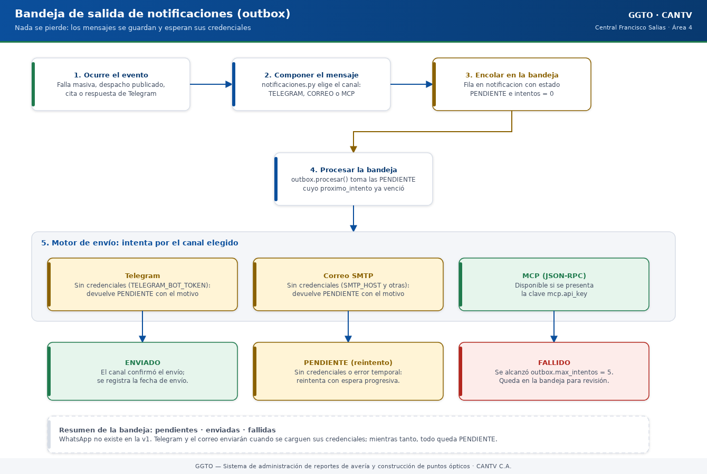

Sistema de administración de reportes de avería y construcción de puntos ópticos
Manual literal · ImplementaciónManual técnico — Alertas, Telegram y MCP (GGTO, Ciclo 9)
Manual para todo público. Explica, en lenguaje sencillo, cómo GGTO detecta fallas masivas, cómo se avisa al personal y cómo se atienden las consultas por Telegram y por MCP (un canal automático para programas). Está dirigido a técnicos de campo, supervisores y administradores de la Central Francisco Salias (Área 4) de CANTV. Corresponde al Ciclo 9 del proyecto. Aviso central de este manual: las credenciales de Telegram y de correo no están configuradas en producción. Por eso, hoy el sistema NO envía notificaciones: cada aviso queda PENDIENTE en la […]
Manual para todo público. Explica, en lenguaje sencillo, cómo GGTO detecta fallas masivas, cómo se avisa al personal y cómo se atienden las consultas por Telegram y por MCP (un canal automático para programas). Está dirigido a técnicos de campo, supervisores y administradores de la Central Francisco Salias (Área 4) de CANTV. Corresponde al Ciclo 9 del proyecto.
Aviso central de este manual: las credenciales de Telegram y de correo no están configuradas en producción. Por eso, hoy el sistema NO envía notificaciones: cada aviso queda PENDIENTE en la bandeja de salida (bandeja interna del sistema) y se conserva sin perderse, a la espera de que existan las credenciales. El canal WhatsApp no existe en la versión 1. Los canales previstos son Telegram, correo y MCP.
1Empezar en 5 minutos
- Una falla masiva se detecta sola por concentración. Si varios casos se agrupan en el mismo equipo óptico, en la misma caja o en el mismo sector, el sistema lo detecta al terminar una carga CSV y crea una alerta. También se puede forzar la detección a mano.
- La detección no duplica. Mientras una falla siga activa, una nueva detección sobre el mismo punto no la vuelve a crear. A esto se le llama detección idempotente.
- Todo aviso pasa primero por la bandeja de salida. El sistema guarda cada notificación antes de intentar enviarla. Si el envío falla, se reintenta con esperas cada vez mayores; esto se llama patrón de bandeja de salida (outbox).
- Hoy todo queda PENDIENTE. Sin las credenciales de Telegram y de correo, los envíos no se completan: quedan marcados como PENDIENTES en la bandeja y el usuario no recibe nada. No debe afirmarse que el sistema ya notifica.
- El bot y el canal MCP responden igual por la bandeja. Las respuestas del bot de Telegram y las acciones del canal MCP también pasan por la bandeja de salida; por lo tanto, también quedan pendientes mientras no haya credenciales. MCP es un canal automático para que otros programas consulten GGTO.

Código del gráfico (Mermaid)
flowchart TD
ING["Carga del CSV diario<br/>INGESTA"] --> DET["Detección por concentración<br/>agrupa por olt, fat o id_sector"]
MAN["Reporte manual<br/>desde ALERTAS o Telegram o MCP"] --> FALLA
DET -->|"supera el umbral"| FALLA["Se registra la falla masiva<br/>estado DETECTADA"]
DET -->|"no supera el umbral"| NADA["No se crea nada"]
FALLA --> CUAD["Se asigna la cuadrilla<br/>más cercana al sector"]
CUAD --> ENC["Se encola la alerta<br/>canal TELEGRAM"]
ENC --> BANDEJA["Bandeja de salida<br/>estado PENDIENTE"]
BANDEJA --> REV{"¿Hay credenciales?"}
REV -->|"No"| PEND["Sigue PENDIENTE<br/>se reintenta más tarde"]
REV -->|"Sí"| ENV["Se envía<br/>estado ENVIADO"]
PLAN["Planificación RF-17<br/>y material RF-18"] --> FALLA2Visión general
2.1Alcance funcional y requerimientos
El Ciclo 9 agrupa tres cosas: las alertas, el bot de Telegram y el servidor MCP. El archivo de rutas enumera su alcance así: «ALERTAS, Telegram y MCP — RF-06, RF-09, RF-16, RF-17, RF-18 / RNF-19, RNF-20».
| Requerimiento | Contenido resumido |
|---|---|
| RF-06 | Gestionar la ingesta y asignación de casos especiales por Telegram o por inteligencia artificial (canal MCP) |
| RF-09 | Gestionar fallas masivas: detección automática por concentración después de la ingesta, más reporte manual; asignación por proximidad de sector |
| RF-16 | Alertar los casos de falla masiva por Telegram o por el canal MCP |
| RF-17 | Documentar la planificación de atención (reporte simple más evidencias fotográficas) |
| RF-18 | Preparar la solicitud de material según el caso |
| RNF-19 | Observabilidad: métricas de negocio, notificaciones fallidas y rutas de salud y disponibilidad |
| RNF-20 | Fiabilidad: patrón de bandeja de salida con reintentos con espera creciente y estado final; el correo como respaldo de Telegram |
La decisión D-19 fijó la detección automática por concentración más el reporte manual por MCP o
Telegram, con asignación por proximidad de sector. El umbral quedó como un parámetro configurable, que
se definió en la Fase 3 junto con las métricas (decisión D-31). El cierre del ciclo se registra en la
decisión D-60, que lo da por completado con detección idempotente, reporte manual, planificación,
material, bandeja de salida con espera creciente, bot de Telegram con los comandos /ayuda, /estado,
/caso y /falla, servidor MCP con protocolo JSON-RPC y la ruta de métricas.
2.2Componentes implicados
| Capa | Archivo | Responsabilidad |
|---|---|---|
| API (puerta de entrada) | app/api/routes_alertas.py |
11 operaciones: fallas, bandeja de salida, webhook de Telegram, MCP y métricas |
| Servicio de fallas | app/services/fallas.py |
Detección por concentración, cuadrilla cercana y alerta |
| Bandeja de salida | app/services/outbox.py |
Encolado, procesamiento con espera creciente y métricas de la bandeja |
| Canales | app/services/notificaciones.py |
Envío por Telegram y por correo (SMTP) |
| Esquemas | app/schemas/alertas.py |
Contratos de datos del ciclo |
| Modelos | app/models/despacho_entities.py |
Tablas notificacion y falla_masiva |
| Cliente web | app/web/src/api/client.ts |
Funciones de fallas, bandeja y métricas |
| Página web | app/web/src/pages/Alertas.tsx |
Página ALERTAS, en la ruta /alertas |
El archivo de rutas se registra con el prefijo /api/v1 y la etiqueta «alertas, telegram y mcp». El rol de
escritura se define una sola vez: solo ADMIN y SUPERVISOR pueden escribir. La versión que anuncia
el servidor MCP es 0.1.0.
3Fallas masivas
3.1Detección por concentración (agrupador olt/fat/id_sector)
El servicio de fallas documenta su propósito como «detección automática por concentración (RF-09 / D-31)» y solo admite tres campos agrupadores: olt, fat y id_sector. En palabras simples: el sistema mira si muchos casos pendientes comparten el mismo equipo óptico (OLT), la misma caja de distribución (FAT) o el mismo sector.
El proceso de detección funciona así:
| Paso | Comportamiento |
|---|---|
| Interruptor | Si la detección está desactivada en la configuración, devuelve una lista vacía |
| Umbral | Cantidad mínima de casos por grupo; por defecto 5 |
| Ventana | Cuántas horas hacia atrás se miran; por defecto 24 |
| Campo | Cuál de los tres campos se usa para agrupar; si el valor configurado no es válido, se usa olt |
| Filtro | Casos de la central, que no estén CERRADOS ni CANCELADOS, creados dentro de la ventana y con el campo de agrupación cargado |
| Agrupación | Se agrupa por ese campo y se conservan solo los grupos que alcanzan el umbral |
Para cada grupo, la descripción generada es del tipo «Concentración de N casos en (campo) (valor) (últimas N h)». El origen de la falla es AUTOMATICA y el estado inicial es DETECTADA. Si el campo de agrupación es el sector, el sector de la falla se toma del propio valor; en los demás casos, se busca un caso del grupo que tenga sector cargado.
3.1.1Cuadrilla asignada por proximidad
Para asignar cuadrilla, el sistema primero lista las cuadrillas activas de calle (las que no son de supervisor). Si se indicó un sector, cuenta cuántos casos ha atendido cada cuadrilla en ese sector y elige la de mayor conteo. Si no hay datos del sector, elige la cuadrilla de código menor. Una prueba de contrato funcional se apoya en esta asignación.
3.1.2Cuándo se ejecuta
La detección se dispara automáticamente al terminar una carga CSV: el módulo de ingesta llama al
servicio de fallas después de confirmar el lote y agrega el conteo de fallas masivas al resumen de la carga.
También puede forzarse bajo demanda con la operación POST /api/v1/fallas-masivas/detectar.
3.2Idempotencia por clave_concentracion
Para no duplicar fallas, el sistema construye una clave con la forma campo:valor (por ejemplo
olt:pde-olt-99), recortada a 120 caracteres. Antes de crear una falla, busca otra de la misma central, con
la misma clave y en estado DETECTADA o PLANIFICADA. Si ya existe, la omite.
Esto garantiza que, mientras la falla siga activa, una nueva detección no la duplique. Una prueba verifica la clave y que una segunda detección devuelve una lista vacía. El documento de entornos globales registra la misma regla con un ejemplo.
3.3Umbral (configuración)
Los parámetros viven en la tabla de configuración (como datos estructurados), no en variables de entorno. Si una clave está vacía o ausente, el sistema usa su valor por defecto.
| Clave | Valor inicial | Para qué sirve |
|---|---|---|
fallas.activo |
Activado | Habilita la detección automática |
fallas.umbral_casos |
5 | Casos mínimos que debe tener el grupo |
fallas.ventana_horas |
24 | Ventana de tiempo hacia atrás |
fallas.campo_concentracion |
olt |
Campo de agrupación: olt, fat o id_sector |
despacho.destino_telegram |
Vacío | Destino del aviso en Telegram; si está vacío, la notificación queda PENDIENTE |
Una prueba apaga la detección, comprueba que devuelve una lista vacía y luego restaura el valor.
3.4Endpoints
| Método y ruta | Para qué sirve | Rol exigido |
|---|---|---|
GET /api/v1/fallas-masivas |
Listar las fallas registradas | Autenticado |
POST /api/v1/fallas-masivas |
Reportar una falla manual (responde 201) | ADMIN o SUPERVISOR |
POST /api/v1/fallas-masivas/detectar |
Detectar fallas por concentración | ADMIN o SUPERVISOR |
PATCH /api/v1/fallas-masivas/{id_falla} |
Actualizar el estado o la cuadrilla | ADMIN o SUPERVISOR |
POST /api/v1/fallas-masivas/{id_falla}/planificacion |
Documentar la planificación (RF-17) | ADMIN o SUPERVISOR |
POST /api/v1/fallas-masivas/{id_falla}/material |
Solicitar material (RF-18), responde 201 | ADMIN o SUPERVISOR |
El listado acepta filtros por estado, central y solo activas; este último deja a la vista solo las fallas DETECTADA y PLANIFICADA. El reporte manual exige una descripción de 5 a 500 caracteres y registra el origen REPORTE_TECNICO. Si no se indica cuadrilla, se resuelve la cercana al sector informado; después de crear la falla, se encola la alerta. La actualización valida que el estado sea uno de DETECTADA, PLANIFICADA, ATENDIDA o CERRADA. Un identificador de falla inexistente produce el error 404.
Dos pruebas confirman el filtro de «solo activas» y que el rol TECNICO puede listar pero recibe 403 al crear.
4Planificación (RF-17) y material (RF-18) sobre la falla
4.1Planificación
La solicitud de planificación exige un texto de planificación de 5 a 2000 caracteres. Además admite un reporte simple (máximo 2000 caracteres), una lista de evidencias (números de serie o rutas de archivos) y una cuadrilla opcional. La operación sigue estos pasos:
- Recupera la falla; si no existe, responde 404.
- Guarda el texto de planificación.
- Copia el reporte simple si viene informado.
- Concatena las evidencias al reporte simple con el prefijo «Evidencias: ».
- Reasigna la cuadrilla si se indicó una.
- Fija el estado en PLANIFICADA y registra la fecha y hora de planificación.
Una prueba comprueba el estado PLANIFICADA, que la fecha de planificación no esté vacía y que un número de serie de ejemplo quede guardado en el reporte simple.
4.2Material
La solicitud de material exige una descripción de 3 a 500 caracteres y admite una cuadrilla. La operación responde 201 y crea una orden de material con estos datos:
| Campo | Valor |
|---|---|
| Cuadrilla | La recibida o, si no viene, la de la falla |
| Solicitante | El P00 del usuario autenticado |
| Estado | SOLICITADA |
| Observación | [Falla N] seguido de la descripción |
La respuesta incluye el identificador de la orden, el estado, la observación y el identificador de la falla. Una prueba valida el estado SOLICITADA y el prefijo «[Falla N]».
5Outbox
5.1Tabla notificacion
Toda notificación se guarda primero en la tabla notificacion. Esto es lo que se llama patrón de
bandeja de salida: el sistema nunca intenta enviar algo sin haberlo registrado antes. Sus columnas
relevantes son:
| Columna | Qué guarda |
|---|---|
canal |
Por dónde se envía (Telegram o correo) |
destinatario |
A quién va dirigido |
asunto |
Título del mensaje (se recorta a 200 caracteres) |
cuerpo |
Texto del mensaje |
id_caso |
Caso relacionado, si lo hay; si se borra el caso, queda vacío |
estado |
Situación del envío |
error |
Motivo del fallo, si lo hubo |
enviado_en |
Fecha y hora del envío efectivo |
intentos |
Cuántas veces se intentó |
proximo_intento |
Cuándo corresponde el próximo intento |
Al encolar, la fila se crea con estado PENDIENTE, cero intentos y próximo intento ahora mismo.

Código del gráfico (Mermaid)
stateDiagram-v2
[*] --> PENDIENTE: se encola la notificación<br/>intentos = 0
PENDIENTE --> REVISA: llega la hora del próximo intento
REVISA --> ENVIADO: el canal confirma el envío
REVISA --> PENDIENTE: el canal responde PENDIENTE<br/>(faltan credenciales)<br/>no consume intentos y se reprograma
REVISA --> PENDIENTE: el canal responde FALLIDO<br/>y aún quedan intentos<br/>se reprograma con espera mayor
REVISA --> FALLIDO: se agotan los intentos permitidos
ENVIADO --> [*]
FALLIDO --> [*]
note right of PENDIENTE
Hoy Telegram y correo no tienen
credenciales: los envíos quedan
PENDIENTES y se reintentan.
end note5.2Estados
| Estado | Significado |
|---|---|
PENDIENTE |
Encolada o diferida; puede reintentarse |
ENVIADO |
El canal confirmó el envío |
FALLIDO |
Se agotaron los intentos permitidos |
Los canales devuelven uno de estos tres estados: ENVIADO, PENDIENTE o FALLIDO. La página ALERTAS ofrece el filtro de la bandeja por estado PENDIENTE, ENVIADO y FALLIDO.
5.2.1Diferencia entre «diferida» y «fallida»
- Si el canal responde PENDIENTE (por ejemplo, porque faltan credenciales), el sistema resta el intento que acababa de sumar, reprograma el envío con una espera mayor y contabiliza la notificación como «diferida». Así no se consumen intentos.
- Si el canal responde FALLIDO y ya se alcanzó el máximo de intentos, la notificación pasa a FALLIDO y se limpia la fecha del próximo intento. Si todavía quedan intentos, se reprograma.
El documento normativo de métricas formaliza que «diferida» = intentadas − enviadas − fallidas.
5.3Backoff y max_intentos (app/services/outbox.py)
La espera entre reintentos sigue una pauta creciente (a esto se le llama backoff): 1 minuto, 2, 4, 8 y así sucesivamente, con un tope de 60 minutos. El número máximo de intentos se lee de la configuración y su valor por defecto es 5.
El procesamiento selecciona las notificaciones PENDIENTES cuya hora de próximo intento ya llegó, las ordena por número de notificación y respeta un límite de cuántas procesar. Devuelve un resumen con cuántas se intentaron, cuántas se enviaron, cuántas quedaron diferidas, cuántas fallaron y el detalle de cada notificación.
5.3.1Disparadores del procesamiento
| Disparador | Límite |
|---|---|
POST /api/v1/notificaciones/procesar |
Entre 1 y 200; por defecto 50 |
| Respuesta del bot de Telegram | 5 |
Herramienta MCP procesar_notificaciones |
20 |
5.4Canales (app/services/notificaciones.py)
El módulo declara una regla de oro: si el canal no tiene credenciales, la notificación queda PENDIENTE con el motivo, en lugar de perderse.
| Canal | Variable de entorno | Sin credenciales |
|---|---|---|
TELEGRAM |
TELEGRAM_BOT_TOKEN |
Queda PENDIENTE con el motivo |
CORREO |
SMTP_HOST (junto con SMTP_PORT, SMTP_USER, SMTP_PASSWORD y MAIL_FROM) |
Queda PENDIENTE con el motivo |
El envío por Telegram usa una llamada HTTP al servicio de Telegram con formato Markdown y recorta el texto a 4000 caracteres. Devuelve FALLIDO ante errores de red, de tiempo de espera o del sistema. El envío por correo usa el protocolo SMTP con conexión segura y autenticación si hay usuario. Cualquier otro canal devuelve FALLIDO con el mensaje «Canal no soportado».
Recordatorio: no se reproducen valores de secretos en este manual; solo se nombran las variables y las claves de configuración.
5.4.1Nota sobre nombre de canal del correo
El envío reconoce el canal CORREO. Queda pendiente de confirmar si algún flujo de la versión 1 encola notificaciones por ese canal: en el código revisado, tanto las alertas de falla como las respuestas del bot encolan siempre TELEGRAM.
6Telegram
6.1Webhook POST /api/v1/telegram/webhook
El webhook (la puerta por la que Telegram entrega los mensajes) lee el contenido enviado y acepta tanto mensajes nuevos como mensajes editados. Extrae el identificador de la conversación y el texto. Si falta cualquiera de los dos, responde que ignoró el mensaje sin procesar nada. En caso contrario, resuelve el comando, encola la respuesta y devuelve el texto que corresponde.
La respuesta al usuario se encola por el canal Telegram y luego se procesan hasta 5 notificaciones. Esto significa que la respuesta al usuario también depende de la bandeja de salida: sin credenciales del bot, la respuesta queda PENDIENTE y el usuario no recibe nada en Telegram.
6.2Comandos /ayuda /estado /caso /falla
El sistema separa el comando del argumento, normaliza el comando a minúsculas y le quita la barra inicial.
| Comando | Alias | Comportamiento |
|---|---|---|
/ayuda |
start, help |
Devuelve la lista de comandos disponibles |
/estado |
— | Cuenta los casos pendientes y las fallas activas de la central |
/caso <id_averia> |
— | Busca el caso por identificador de avería y devuelve estado, cliente, teléfono, dirección y problema |
/falla <descripción> |
— | Crea una falla masiva con origen REPORTE_TECNICO |
Detalles verificados: /caso sin argumento responde «Uso: /caso <id_averia>» y, si no encuentra el caso,
«No encontré el caso …». /falla sin argumento responde «Uso: /falla <descripción de la falla>»; la
descripción se prefija con «[Telegram (identificador de la conversación)]». Un comando desconocido responde
«Comando no reconocido. Use /ayuda.». Las pruebas del webhook cubren la ayuda, el estado, la consulta de un
caso (incluido el caso no encontrado), el reporte de falla, un mensaje sin texto y el secreto.
6.2.1Comando no implementado
El comando /falla crea la falla, pero no llama a la función que alerta al supervisor, a diferencia
del reporte manual y de la herramienta MCP, que sí lo hacen. Sin embargo, el mensaje de respuesta
afirma «Se notificó al supervisor». Este es el comportamiento real del código y se documenta tal
cual; queda pendiente de confirmar si es intencional.
6.3Cabecera X-Telegram-Bot-Api-Secret-Token
El webhook recibe de forma opcional la cabecera X-Telegram-Bot-Api-Secret-Token. El valor esperado se
lee de la clave telegram.webhook_secret de la tabla de configuración:
- Si la clave tiene valor y la cabecera no coincide, el sistema responde error 403 con el detalle «Secreto del webhook inválido».
- Si la clave está vacía, la cabecera no se exige.
Una prueba valida ambos caminos.
7MCP
7.1POST /api/v1/mcp JSON-RPC
El servidor MCP se expone en POST /api/v1/mcp con la descripción «Servidor MCP (JSON-RPC 2.0)». MCP es
un canal automático pensado para que otros programas (asistentes o herramientas) consulten GGTO. El
protocolo JSON-RPC es una forma estándar de pedir acciones y recibir respuestas en formato JSON. La
operación es asíncrona, lee el contenido enviado y extrae el método, el identificador de la petición y los
parámetros. No exige sesión de usuario: su control de acceso es la clave MCP.
| Método JSON-RPC | Resultado |
|---|---|
initialize |
Devuelve la versión de protocolo 2024-11-05, las capacidades de herramientas y la información del servidor ggto-mcp versión 0.1.0 |
tools/list |
Devuelve la lista de herramientas disponibles |
tools/call |
Ejecuta la herramienta indicada en los parámetros |
| Cualquier otro método | Error -32601, «Método no soportado» |
La respuesta exitosa tiene la forma {"jsonrpc": "2.0", "id": …, "result": …}. Las herramientas devuelven
tanto un texto legible como un objeto de datos estructurado.
7.2Cabecera X-MCP-Key
La operación recibe de forma opcional la cabecera X-MCP-Key. El valor esperado se lee de la clave
mcp.api_key de la tabla de configuración:
- Si la clave está configurada y no coincide, se devuelve un error JSON-RPC con código -32001 y el mensaje «Clave MCP inválida».
- Si la clave está vacía, la cabecera no se exige.
Una prueba cubre el rechazo y el acceso con la cabecera correcta.
7.3Métodos expuestos según el código
Solo están implementados los tres métodos anteriores. La consulta de recursos y cualquier otro método caen en el error -32601. Queda pendiente de confirmar cualquier ampliación de métodos o de herramientas más allá de las declaradas en la lista oficial.
7.4Herramientas de la lista TOOLS
La lista oficial declara cuatro herramientas:
| Herramienta | Descripción | Argumentos |
|---|---|---|
estado_central |
Resumen de casos pendientes y fallas activas | Ninguno |
consultar_caso |
Busca un caso por identificador de avería o por teléfono | id_averia, telefono |
reportar_falla |
Registra una falla masiva | descripcion (obligatorio) |
procesar_notificaciones |
Procesa la bandeja de salida | Ninguno |
consultar_caso exige al menos uno de los dos argumentos; si faltan, el sistema responde con el error
-32602. Si no encuentra el caso, devuelve {"encontrado": false}. reportar_falla exige una descripción
de al menos 5 caracteres, prefija el texto con «[MCP]», asigna la cuadrilla cercana, crea la falla y sí
llama a la función que alerta.
8Métricas
8.1GET /api/v1/metricas
La ruta de observabilidad responde con el contrato de métricas y la descripción «Métricas de negocio y estado de los canales». Exige usuario autenticado y calcula:
| Campo | Qué muestra |
|---|---|
casos_total |
Suma de los conteos por estado |
casos_por_estado |
Conteo agrupado por estado actual |
casos_por_categoria |
Conteo agrupado por categoría |
lotes_ingesta |
Cantidad de cargas CSV registradas |
casos_ingeridos |
Casos que entraron por ingesta CSV |
fallas_activas |
Fallas en estado DETECTADA o PLANIFICADA |
notificaciones_pendientes / enviadas / fallidas |
Provistas por el servicio de bandeja de salida |
canales_configurados |
Indica si existe la credencial de Telegram y si existe la de correo |
La bandeja de salida agrupa la tabla de notificaciones por estado y expone PENDIENTE, ENVIADO y FALLIDO. Una prueba comprueba el total de casos, que no hay casos ingeridos y que ambos canales figuran como no configurados.
9ESTADO REAL de los canales
9.1Telegram y correo sin credenciales ⇒ envíos PENDIENTES
En el entorno real, las credenciales de los canales NO están configuradas. Por diseño, el sistema
responde PENDIENTE con el motivo «Sin TELEGRAM_BOT_TOKEN configurado» y PENDIENTE con el motivo
«Sin SMTP_HOST configurado». En consecuencia:
- El indicador de canales configurados informa falso para Telegram y para correo.
- Las alertas quedan en la bandeja con estado PENDIENTE y no se pierden.
- Una prueba verifica que la alerta es del canal TELEGRAM, que su asunto contiene «Falla masiva» y que su estado es PENDIENTE.
- Otra prueba verifica que, sin credenciales, las enviadas son 0 y las diferidas son al menos 1.
Por lo tanto, no debe afirmarse que el sistema ya notifica: los envíos permanecen PENDIENTES hasta
que existan las credenciales (TELEGRAM_BOT_TOKEN y SMTP_HOST). La propia página ALERTAS se lo indica
al usuario en pantalla.
9.2WhatsApp NO existe
El canal de WhatsApp no está implementado en la versión 1: el envío solo reconoce TELEGRAM y CORREO, el indicador de canales configurados solo expone telegram y correo, y la prueba de esquema exige exactamente esas dos claves. WhatsApp está diferido y no debe documentarse como disponible.
9.2.1Canales mencionados en dependencias
Las variables MCP_SERVER_URL y MCP_API_KEY aparecen en el documento de entornos globales del proyecto,
pero el servidor MCP implementado no las consume: su control de acceso es la clave mcp.api_key de la
tabla de configuración. Queda pendiente de confirmar el uso previsto de esas variables de entorno.
10Endpoints de bandeja y página web ALERTAS
10.1Endpoints de bandeja
| Método y ruta | Para qué sirve | Parámetros | Rol |
|---|---|---|---|
GET /api/v1/notificaciones |
Bandeja de salida | estado, canal, limite (1 a 500; por defecto 100) |
Autenticado |
POST /api/v1/notificaciones/procesar |
Procesar los reintentos | limite (1 a 200; por defecto 50) |
ADMIN o SUPERVISOR |
El listado ordena de la notificación más reciente a la más antigua y aplica los filtros. El procesamiento delega en el servicio de bandeja de salida y confirma la operación en la base de datos. Una prueba confirma que el rol TECNICO recibe 403 al procesar.
10.2Página web ALERTAS
La página ALERTAS cubre los requerimientos RF-09, RF-16, RF-17 y RF-18, y los requisitos RNF-19 y
RNF-20. Está registrada en la ruta /alertas y al abrirse carga en paralelo las métricas, las fallas y
la bandeja.
| Zona | Contenido |
|---|---|
| Estado de las alertas | Tarjetas de fallas activas, notificaciones (pendientes, enviadas, fallidas) y casos totales; estado de los canales |
| Fallas masivas | Tabla con origen, concentración, descripción, sector, cuadrilla, estado y fecha; filtro «solo activas» |
| Acciones por falla | Botones «Planificar», «Material» y un selector de estado |
| Bandeja de notificaciones | Tabla con canal, destinatario, asunto, estado, intentos, próximo intento y error |
| Botones superiores | «Detectar fallas» y «Reportar falla» |
| Ventanas emergentes | Reporte manual, planificación y solicitud de material |
Los estados de falla que ofrece la interfaz son DETECTADA, PLANIFICADA, ATENDIDA y CERRADA, coherentes con la validación del servidor. La detección bajo demanda informa cuántas fallas nuevas se crearon o que no hubo concentraciones sobre el umbral. El procesamiento de la bandeja muestra el resumen de enviadas, diferidas y fallidas. Las funciones de escritura se deshabilitan cuando la sesión es de solo lectura.
11Pruebas
11.1Cobertura del ciclo 9
El archivo app/tests/test_alertas_api.py contiene 23 pruebas de integración que cubren la detección
RF-09, la planificación RF-17, el material RF-18, la bandeja de salida y los canales. El proyecto cerró la
Fase 4 con 169 de 169 pruebas de pytest en verde y 215 pruebas sumando las 46 E2E de Playwright;
además, las revisiones con ruff, mypy y tsc en modo estricto terminaron sin hallazgos. El
guion E2E 09-alertas.spec.js aportó 4 pruebas sobre métricas, RF-09, RF-17, RF-18 y la bandeja.
| Bloque | Pruebas |
|---|---|
| Detección automática | Detección por concentración, encolado de la alerta y detección desactivada |
| Reporte, planificación y material | Reporte manual con planificación, solicitud de material, actualización de estado y filtros |
| Bandeja de salida | Procesamiento sin credenciales |
| Telegram | Ayuda, estado, caso, reporte de falla, mensaje sin texto y secreto |
| MCP | Inicialización, lista de herramientas, ejecución, método no soportado y clave |
| Métricas y control de acceso | Métricas, permisos por rol y petición sin token |
Modo de pruebas aislado. Las pruebas usan la variable de entorno DB_SCHEMA para trabajar sobre
esquemas separados: ggto_test para pytest y ggto_e2e para Playwright. Así no se mezclan datos
de prueba con datos reales.
11.2Pruebas de contrato y RBAC
Además del archivo específico, las pruebas de contrato verifican que la ruta de fallas masivas forma parte
del inventario publicado y que los roles autorizados pueden crear fallas. El escenario base de las pruebas
crea seis casos pendientes en el mismo OLT para superar el umbral de 5, fijando el campo olt
directamente porque la vía manual no lo carga.
11.3Verificación en vivo
La decisión D-60 registra la verificación en vivo del ciclo con 42 casos, 0 fallas, bandeja vacía, 73
endpoints y respuesta 200 de la aplicación web en la ruta /alertas. Esta verificación corresponde a un
entorno de pruebas; no demuestra envíos reales, porque las credenciales de los canales siguen sin
configurarse.
12Pendiente de confirmar
| Tema | Motivo |
|---|---|
| Canal CORREO sin un flujo que lo encole en la versión 1 | El envío lo soporta, pero los flujos revisados encolan TELEGRAM |
El comando /falla de Telegram no llama a la función que alerta, aunque el mensaje lo afirme |
Es el comportamiento real del código; falta confirmar si es intencional |
Uso de las variables MCP_SERVER_URL y MCP_API_KEY del entorno |
El código usa la clave mcp.api_key de la tabla de configuración |
| Ampliación de métodos MCP o de la lista de herramientas | No es verificable en el repositorio actual |
| Fecha de habilitación de las credenciales de Telegram y correo | Depende de la operación, no del código |